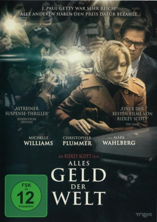

#9047 Alles Geld der Welt
Alternativ: All the Money in the World
Auszeichnungen: für 1 Oscars nominiert
 
 IMDB-Wertung: 6.8 / 10
IMDB-Wertung: 6.8 / 10  Metascore: 72
Metascore: 72 
Die Geschichte des entführten 16-jährigen John Paul Getty III und des verzweifelten Versuches seiner Mutter den Großvater und Milliardär Jean Paul Getty dazu zu bewegen, das Lösegeld für seinen Enkel zu zahlen.
Jahr: 2017
Dauer: 132 Minuten
FSK: 12
Land: USA Studio: SPETonspuren: DTS - ,
Untertitel: Deutsch, Englisch,
Auflösung: 1080p (1920x800) Größe: 11161 MB
Genre: Thriller, Drama, Krimi, Mystery, Biographie
Regisseur:  Ridley Scott
Ridley Scott
Drehbuch: David Scarpa
Soundtrack: Daniel Pemberton
Darsteller:
 Michelle Williams als Gail Harris
Michelle Williams als Gail Harris Christopher Plummer als J. Paul Getty
Christopher Plummer als J. Paul Getty Mark Wahlberg als Fletcher Chase
Mark Wahlberg als Fletcher Chase Romain Duris als Cinquanta
Romain Duris als Cinquanta Timothy Hutton als Oswald Hinge
Timothy Hutton als Oswald Hinge Charlie Plummer als John Paul Getty III
Charlie Plummer als John Paul Getty III Charlie Shotwell als John Paul Getty III (Age 7)
Charlie Shotwell als John Paul Getty III (Age 7)- Andrew Buchan als John Paul Getty II
 Marco Leonardi als Mammoliti
Marco Leonardi als Mammoliti- Giuseppe Bonifati als Giovanni Iacovoni
- Nicolas Vaporidis als Il Tamia 'Chipmunk'
- Andrea Piedimonte Bodini als Corvo
- Guglielmo Favilla als Piccolino
- Nicola Di Chio als Kidnap Van Driver
- Francesca Inaudi als Prostitute #2
 Stacy Martin als Nancy Getty's Secretary
Stacy Martin als Nancy Getty's Secretary- Maya Kelly als Aileen Getty (Age 6)
- Cherise Silvestri als Secretary Getty Oil
 Roy McCrerey als Attorney Getty Oil
Roy McCrerey als Attorney Getty Oil- Anna Devlin als Aileen Getty (Age 15)
- Stanley Treshansky als Mark Getty (Age 13)
- Daniel Gosling als Telegraph Reporter
- Ghassan Massoud als Prince Al-Rashid
- Adam Astill als Getty Oil Landman
 Olivia Grant als Millicent (Getty's Starlet #1)
Olivia Grant als Millicent (Getty's Starlet #1)- Charlotte Beckett als Annie (Getty's Starlet #2)
- Paolo Bernardini als Police Tech Officer
- Lorenzo Pedrotti als Communist #1
- Giulio Base als Coroner
- Olivia Magnani als Factory Woman
- Giampiero Judica als Sgrò
 Rainer Sellien als Otto Lam
Rainer Sellien als Otto Lam- Monica Nappo als Barn Woman
- Maurizio Lombardi als Mammoliti's Doctor
- Valeria Vaiano als Constable's Wife
 Mario Opinato als Sotheby's Appraiser
Mario Opinato als Sotheby's Appraiser- Alex Marchi als Newspaper Photo Editor
- Dean Kilbey als Post Man
- Dominic Cazenove als Press Conference Host
- Chantal Ughi als Villager #2
 Jonathan Aris als Conservator
Jonathan Aris als Conservator- Luca Avallone als Butcher's Son (uncredited)
- Francesco Di Raimondo als Paparazzo (uncredited)
- Stefan Kopiecki als Gardener (uncredited)
- Simon Lenagan als Police Officer (uncredited)
 Teresa Mahoney als John Paul Getty II Caregiver (uncredited)
Teresa Mahoney als John Paul Getty II Caregiver (uncredited)- Chiara Serangeli als Prostitute (uncredited)
- Adele Tirante als Prostitute Maria
- Alessandra Roca als Prostitue #1
- Kit Cranston als Mark Getty (Age 4)
Datei: X:\2017(A-F)\Alles Geld der Welt (2017, FSK12, 1920x800).mkv seit 11.07.2018
Festplatte: HD 2017(A-Z)-2018(A-F)
 Es gibt insgesamt 152 Filme in der Gruppe '2017(A-F)'
Es gibt insgesamt 152 Filme in der Gruppe '2017(A-F)'